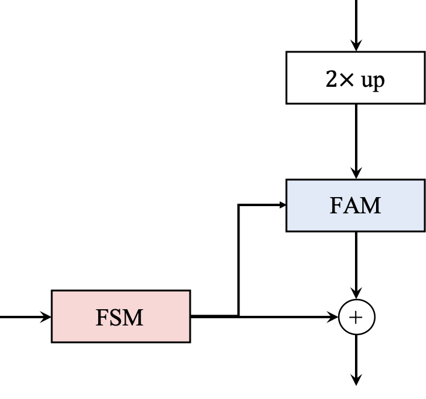

Associate Professor Huazhong University of Science and Technology (HUST) chenghehust [at] gmail.com Dr. Cheng He is currently an Associate Professor with the School of Electrical and Electronic Engineering, Huazhong University of Science and Technology, China. His main research interests are Artificial/Computational Intelligence (including evolutionary multi-objective optimization, model-based optimization, large-scale optimization, etc.).
CV / 简历 / Google Scholar / Github / LinkedIn
We have categorized our articles relating to surrogate-assisted optimization, large-scale optimization, multi-/many-objective optimization, and deep learning and its applications. You are welcome to cite these papers via the Bibtex.
- 10/2022: Our paper titled " Large-scale Multiobjective Optimization via Reformulated Decision Variable Analysis" is accepted to IEEE Transactions on Evolutionary Computation! Thank all the co-authors for their help and encouragement. It took almost 1.5 years to finish this job and took another one year to get this paper published. Before I quite, I told myself "Newbie, research for fun is more important!". I cannot say this is an exciting work, but it's my attempt to do something different. If the large-scale optimization problem can be reformulated (TREE & LSMOF), so can the computationally expensive component in an algorithm.
- 07/2022: Thanks for Professor Jin's invitation invitation! I have been appointed as Associate Editor for the Complex & Intelligent Systems (CAIS) (IF 6.7, JCR Q1)! The CAIS is an open access journal which aims to provide a forum for presenting and discussing novel approaches, tools and techniques meant for attaining a cross-fertilization between the broad fields of complex systems, computational simulation, and intelligent analytics and visualization. You are welcome to submit your high-quality papers to the CAIS!
- 07/2022: Our paper titled " Principled Design of Translation, Scale, and Rotation Invariant Variation Operators for Metaheuristics" is accepted to Chinese Journal of Electronics! Congratulations to Ye Tian for his hardworking on the paper! I have to say that this work provides some theoretically interesting result, and look forward to your attention!
- 06/2022: Our paper titled " SoloGAN: Multi-domain Multimodal Unpaired Image-to-Image Translation via a Single Generative Adversarial Network" is accepted to IEEE Transactions on Artificial Intelligence! Congratulations to Shihua Huang for his hardworking on the paper!
- 03/2022: Our paper titled " Adaptive Offspring Generation for Evolutionary Large-Scale Multiobjective Optimization" is awarded the Highly Cited Paper!
- 03/2022: Our paper titled " Adaptive Multiobjective Evolutionary Algorithm for Large-Scale Transformer Ratio Error Estimation" is accepted to Memetic Computing! Congratulations to Changwu Huang for leading this work! -->

|
Cheng He , Lianghao Li, Ye Tian, Xingyi Zhang, Ran Cheng, Yaochu Jin, Xing Yao IEEE Transactions on Evolutionary Computation, 2019 paper code poster LSMOF is an effective framework for large-scale multiobjective optimization. Generally, this framework can reduce the number of decision variables from 1000 to less than 20. The cost of FEs is less than 100,000 for conventional LSMOPs. |

|
Cheng He , Shuhua Huang, Ran Cheng, Tan Kay Chen Yaochu Jin, IEEE Transactions on Cybernetics, 2021 paper code poster GMOEA focuses on efficient offspring generation via learning from the distribution of promising solutions. GMOEA is capable of handling MOPs with up to 200 decision variables effectively, which is a new research direction for model-based evolutionary computation. |

|
Cheng He , Ran Cheng, Chuanji Zhang, Ye Tian, Qin Chen Xin Yao, IEEE Transactions on Evolutionary Computation, 2020 paper code TREE is a large-scale multiobjective optimization test suite extracted from the power dilivery system, aiming at handling real-time ratio error estimation of voltage transformers. Generally, the maximum number of decision variables is up to half a million and it includes constraints, which provides a guidance for the desgin of meaningful evolutionary algorithm. |
|

|
Shihua Huang, Zhichao Lu, Ran Cheng, Cheng He ICCV, 2021 arXiv code FaPN a simple yet effective top-down pyramidal architecture to generate multi-scale features for dense image prediction. It improves FPN's AP / mIoU by 1.5 - 2.6% on all tasks. |